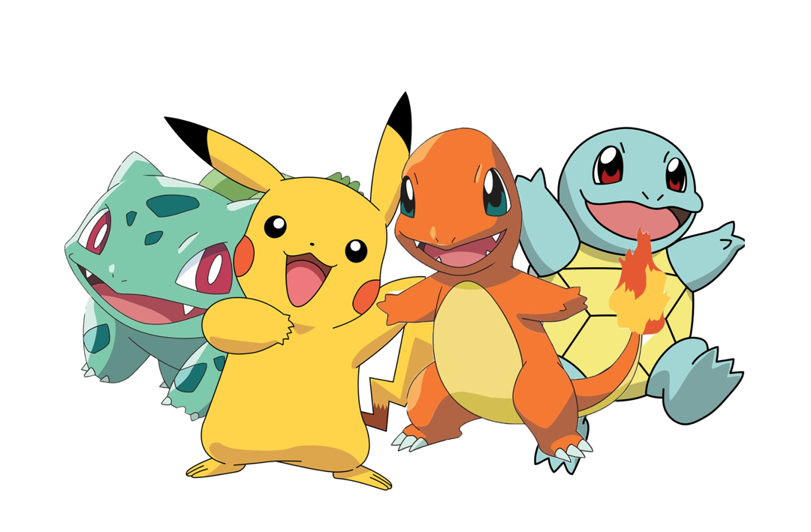
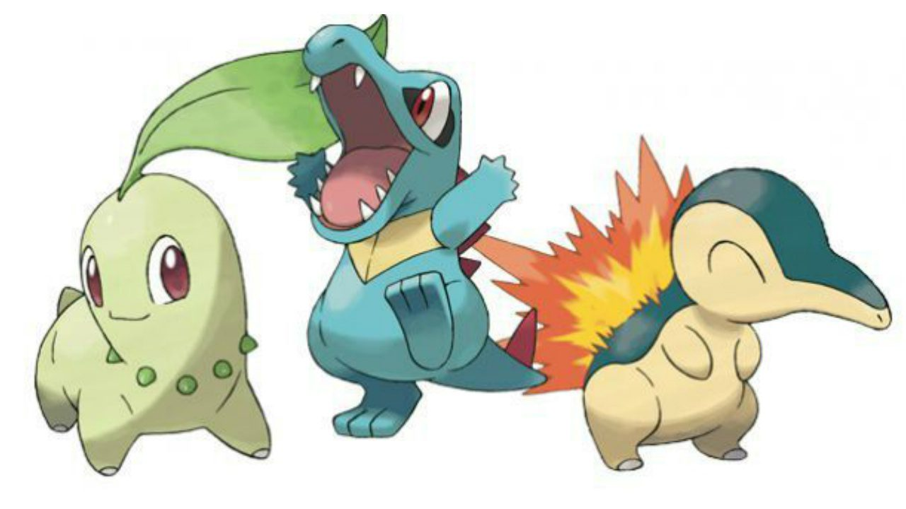
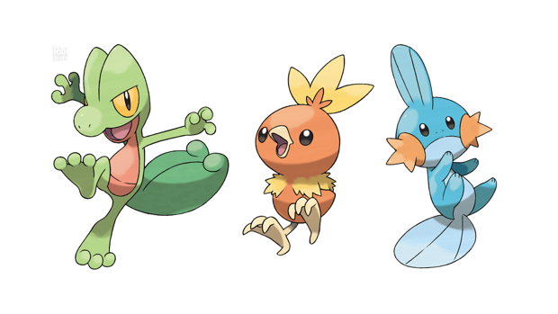

Sobre nós

Pokemon
Pokémon são criaturas fictícias que pertencem ao universo da série de mesmo nome - Pokémon. Originalmente, a série foi criada como um jogo de videogame e, com a sua popularização, se espalhou para diversos outros formatos, como séries de TV, filmes e livros.
A palavra pokémon é a contração de duas palavras em inglês: pocket, que significa bolso; e monster, que significa monstro. Assim, um pokémon é um "monstro de bolso", na tradução literal.
Os jogos do gênero RPG da franquia Pokémon foram criados por Satoshi Tajiri em 1996. Com o sucesso do jogo, houve a adaptação para formatos de animação audiovisual, como animes (desenhos animados japoneses) e filmes.
Primeiras Gerações
-

Primeira Geração
A origem de Pokémon está em dois jogos chamados Poketto Monsutā Midori, mais conhecido como Pokémon Green, e Poketto Monsuttā Aka, conhecido no ocidente por Pokémon Red, lançados em 1996, no Japão. Pokémon Green nunca foi lançado fora do Japão, sendo lançado apenas Pokémon Red Version e Blue Version. -

Segunda Geração
À medida que conquistava cada vez mais fãs mundialmente, os criadores decidiram fazer uma continuação dos primeiros jogos. Isso gerou em duas novas versões, que traziam uma aventura diferente das anteriores, situada em uma Região ao lado do palco dos primeiros jogos, 100 novos Pokémon, totalizando 251, recursos novos, entre outros. Conhecidos como Pokémon Gold & Silver, eles serviram de base para o mecanismo dos seguintes, apresentando a distinção entre Pokémon machos e fêmeas, possibilitando o cruzamento de Pokémon, conceito muito usado para trocas entre jogadores, utilizando o tempo dentro do jogo, diferenciando o dia da noite e muitas outras novidades para os jogadores. -

Terceira Geração
Em março de 2003, foram lançados os primeiros jogos da terceira geração, mais conhecida pelos jogadores como geração Advance, já que seus RPGs originais eram feitos para o portátil Game Boy Advance: Pokémon Ruby & Sapphire, que ultrapassaram as 3,1 milhões de unidades vendidas, sendo assim os mais comercializados no Japão em 2002[16] traziam 135 novos Pokémon, mas era impossível transferir Pokémon de gerações anteriores para os jogos, pois o treinamento deles em Pokémon Ruby & Sapphire se baseava em um outro sistema, o de Effort Values (valores de esforço), pontos que, ao serem bem calculados e distribuídos ao Pokémon, deixavam-no mais forte que outros treinados sem esse método.